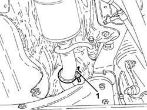
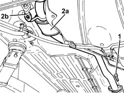
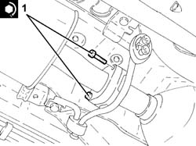

1076B26 INTERMEDIATE EXHAUST SILENCER - R+R EMISSION CONTROL VERSIONS
- Path
- Procedures > 10 ENGINE UNIT > 1076 EXHAUST PIPES AND SILENCERS > 1076B EXHAUST PIPES AND SILENCERS > 1076B26 INTERMEDIATE EXHAUST SILENCER - R+R EMISSION CONTROL VERSIONS
- Kind
- repair procedure (removal / refitting; the operation number is the code)
- Applies to
- engines: 1.8 T.SPARK, 3.2 V6; all production periods
- Interactive page
- https://sloeber94.github.io/elrnDB-aGt/en/#/125001104
Applies to: engines: 3.2 V6; all production periods
 Removing
Removing
 Refitting
RefittingPosition the vehicle on the ramp
1. Loosen the collar fixing the rear exhaust silencer to the intermediate exhaust silencer.

Applies to: engines: 3.2 V6; all production periods
1. Undo the bolts fixing the intermediate exhaust silencer to the catalytic converter assembly.
2. Remove the intermediate exhaust silencer (2a) after releasing it from the flexible support (2b) and the rear exhaust silencer.
Remove the gasket

Applies to: engines: 3.2 V6; all production periods
Refitting
RemovingRefit the intermediate exhaust silencer, complete with gasket, in its seating, connect it to the rear exhaust silencer and secure it to the flexible mounting.
Tighten the bolts fixing the intermediate exhaust silencer to the catalytic converter assembly to the recommended torque.
 | Fastening | Component | Ø | Value (daNm) |
|---|---|---|---|---|
- | Bolt | CATALYTIC/ CONVERTER/S | M8 | (Intermediate silencer side) 2.3 ÷ 2.8 |
Tighten the collar fixing the intermediate exhaust silencer to the rear exhaust silencer.
Remove the car from the ramps.
Applies to: engines: 1.8 T.SPARK; all production periods
Removing
RefittingPosition the vehicle on the ramp.
1. Loosen the collar fixing the intermediate exhaust silencer to the rear exhaust silencer.

Applies to: engines: 1.8 T.SPARK; all production periods
1. Undo the bolts fixing the intermediate exhaust silencer to the catalytic converter.

Applies to: engines: 1.8 T.SPARK; all production periods
1. Undo the bolt fixing the intermediate exhaust silencer front flexible mounting bracket.

Applies to: engines: 1.8 T.SPARK; all production periods
1. Remove the intermediate exhaust silencer (1a) after having released it from the rear flexible mounting (1b).

Applies to: engines: 1.8 T.SPARK; all production periods
Refitting
RemovingPlace the intermediate exhaust silencer back in its housing and secure it to the rear flexible mounting.
Tighten the bolt fixing the intermediate exhaust silencer front flexible mounting bracket.
1. Tighten the bolts fixing the intermediate exhaust silencer to the catalytic converter to the recommended torque.
Fastening | Component | Ø | Value (daNm) | |
|---|---|---|---|---|
1 | Bolt | CATALYTIC CONVERTER (ONE) | M8 | (Intermediate silencer side), 2.7 ÷ 3.3 |

Applies to: engines: 1.8 T.SPARK; all production periods
Tighten the collar fixing the intermediate exhaust silencer to the rear exhaust silencer.
Remove the car from the ramp.